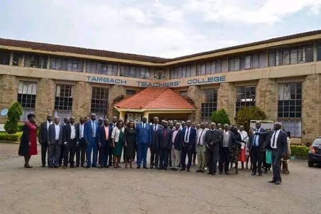
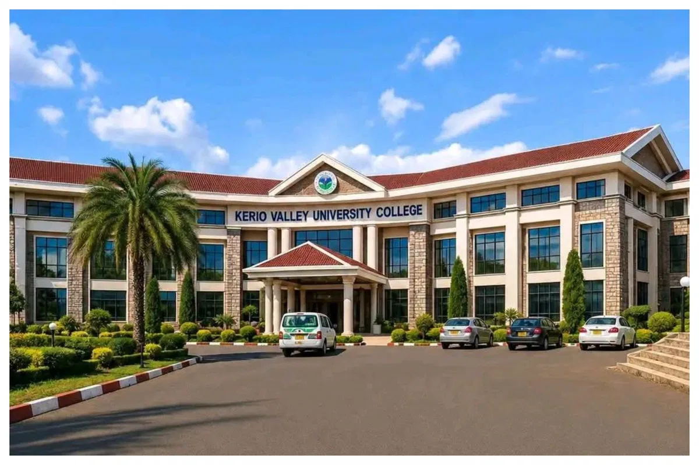

Establishment / 29 October 2025An important step in the journey
Read the sourced report on the Commission for University Education’s assessment visit to Tambach TTC.
 KERIO VALLEYUNIVERSITY COLLEGE
KERIO VALLEYUNIVERSITY COLLEGEA spring of knowledge and innovation. Explore a new chapter in higher education as a constituent college of the University of Eldoret.
Explore study interests
Explore undergraduate study interests in education, agriculture, business, computing, tourism and natural resources. The KVUC course guide brings together programme requirements, study modes and venues sourced from the University of Eldoret. Browse course information ↗

Establishment / 29 October 2025Read the sourced report on the Commission for University Education’s assessment visit to Tambach TTC.
The supplied announcement names Prof. Paul Kipkosgei Tarus as Acting Principal. Explore the leadership page and source artwork.
Explore the legal notice establishing KVUC as a constituent college of the University of Eldoret.
Explore education, agriculture, business, computing, tourism and natural resources in the KVUC course guide, drawing on University of Eldoret programme information.
Browse the course guide ↗